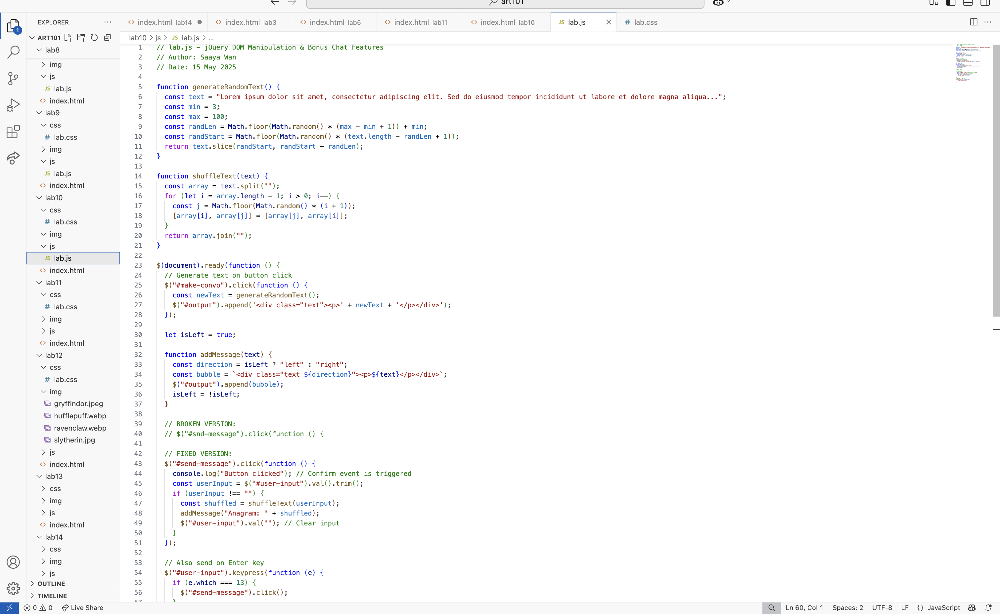
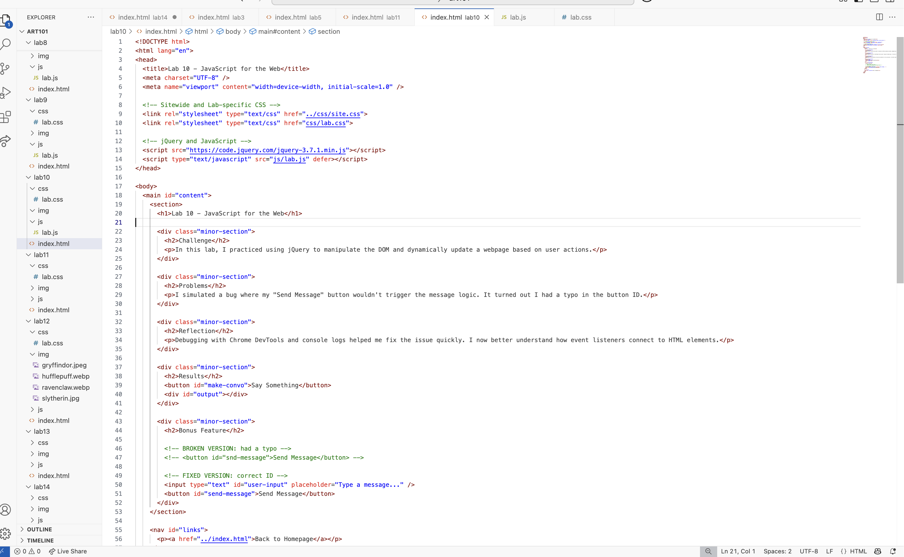
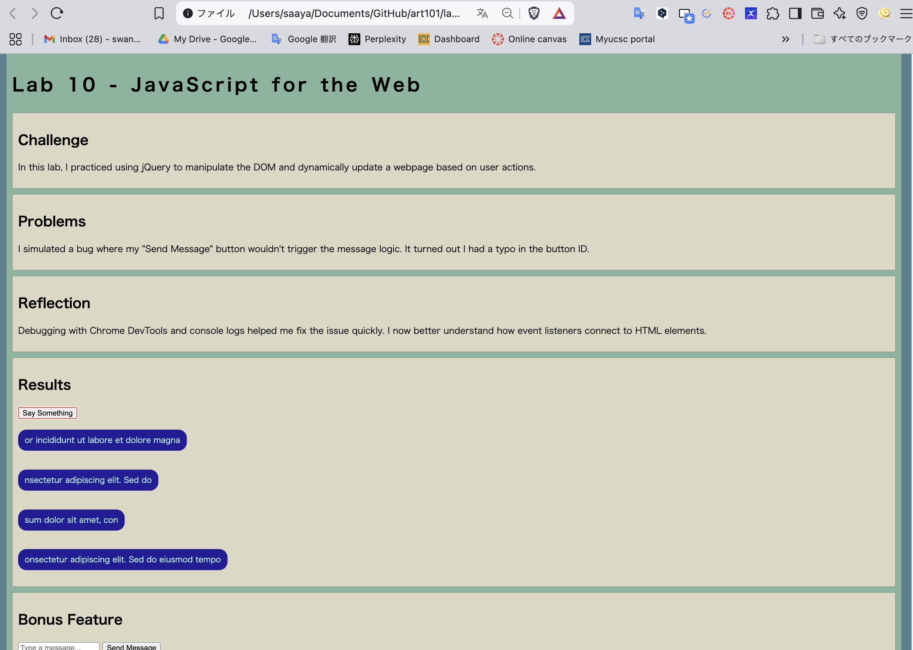

Lab 14 - Debugging Lab 10
Lab Summary
In this lab, I debugged a broken version of Lab 10, where the main goal was to manipulate the DOM using jQuery. The bug I introduced was a typo in the button's ID, which caused the JavaScript click handler to fail.
What Was Broken
I changed the ID of the button from send-message to snd-message in the HTML file but
forgot to update the corresponding selector in the JavaScript file. As a result, clicking the button had no effect.
<!-- Broken HTML -->
<button id="snd-message">Send Message</button>
<!-- Broken JS -->
$("#send-message").click(function () {
// This never runs
});
How I Fixed It
I fixed the issue by correcting the button ID in the HTML to match what the JavaScript expected: send-message.
<!-- Fixed HTML -->
<button id="send-message">Send Message</button>
<!-- JavaScript -->
$("#send-message").click(function () {
console.log("Button clicked!");
});
Reflection
This lab helped me understand how even a small typo can break event handling in JavaScript. I also practiced using
Chrome DevTools and console.log() to test whether event listeners were firing.
I now double-check that my HTML IDs and JS selectors match exactly.
Screenshots
Here is a screenshot showing the console log working after fixing the bug:
  